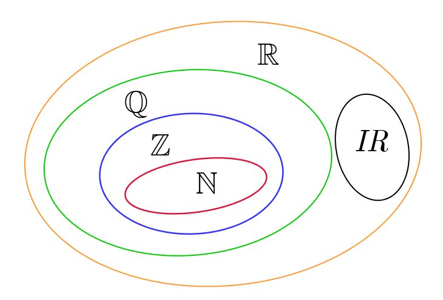
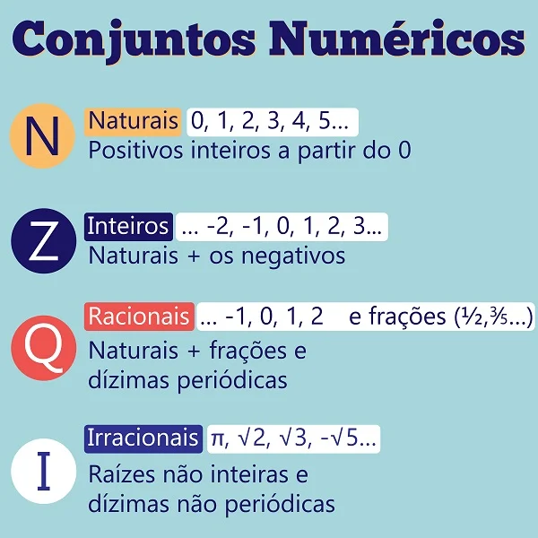
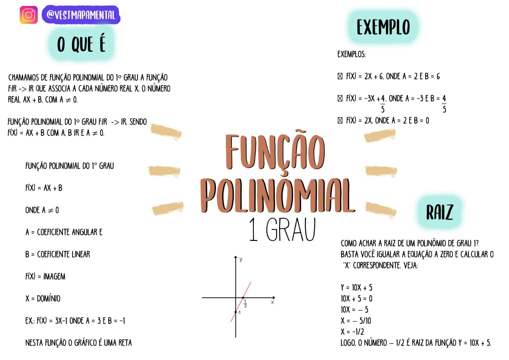
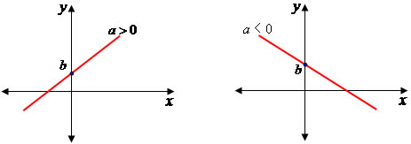

O que sao os Conjuntos Numéricos?
Agrupa vários tipos de números, existem os conjuntos numéricos. Um conjunto é uma
reunião de elementos que compartilham as mesmas características. Quando esses ele_
mentos são números, esse agrupamento passa a ser conhecido como conjunto numérico.
Como se classificam os Conjuntos Numéricos?
Os conjuntos numéricos reúnem diversos conjuntos cujos elementos são números. Eles
são formados pelos números naturais, inteiros, racionais, irracionais e reais.
Propriedades dos Conjuntos Numéricos
O conjunto dos números naturais (N) é um subconjunto dos números inteiros: Z (N ⊂ Z).
O conjunto dos números inteiros (Z) é um subconjunto dos números racionais: (Z ⊂ Q).
O conjunto dos números racionais (Q) é um subconjunto dos números reais (R).
Função Polinomial
Consideremos x e y duas variáveis, sendo uma dependente da outra, isto é, para cada valor atribuído a x corresponde um valor para y. Definimos essa dependência como função, nesse caso, y está em função de x. O conjunto de valores conferidos a x deve ser chamado de domínio da função e os valores de y são a imagem da função. Toda função é definida por uma lei de formação, no caso de uma função do 1º grau a lei de formação será a seguinte: y = ax + b, onde a e b são números reais e a ≠ 0. Esse tipo de função deve ser dos Reais para os Reais. A representação gráfica de uma função do 1º grau é uma reta. Analisando a lei de formação y = ax + b, notamos a dependência entre x e y, e identificamos dois números: a e b. Eles são os coeficientes da função, o valor de a indica se a função é crescente ou decrescente e o valor de b indica o ponto de intersecção da função com o eixo y no plano cartesiano. Observe: Função crescente Função decrescente
 